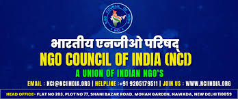
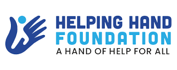
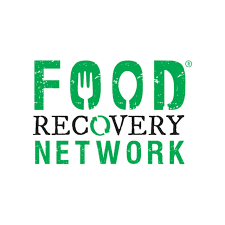
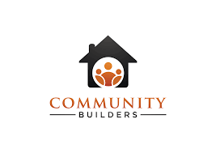
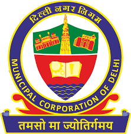

My Story
DonationConnect was created with a simple mission: to bridge the gap between those who want to give and those in need.
My Mission
I believe that everyone deserves access to basic necessities. My mission is to create an efficient and transparent platform that connects donors with shelter homes and volunteers across Delhi NCR, making it easier for people to contribute to their communities.
I strive to reduce waste, alleviate poverty, and foster a culture of giving by simplifying the donation process and ensuring that resources reach those who need them most.

About the Founder
Nitin Balajee
Founder
After witnessing the disconnect between donors and shelter homes during my volunteer work, I founded DonationConnect to bridge this gap and make a meaningful difference in our community.
With a background in social work and technology, I personally manage all aspects of DonationConnect - from website development to shelter partnerships and volunteer coordination. My goal is to create a sustainable platform that makes giving back to the community simple and transparent.

My Vision
I envision a future where no usable item goes to waste, where every donation finds its way to someone who needs it, and where communities come together to support their most vulnerable members.
By 2025, I aim to expand this network to cover all major cities in India, connecting thousands of donors with hundreds of shelter homes and creating a nationwide movement of compassion and resource sharing.
Making an Impact
Since starting this initiative, I've made a significant impact across Delhi NCR. This platform has facilitated thousands of donations, helping shelter homes provide better support to those in need while reducing waste and promoting sustainability.
See Our Full Impact ReportOur Partners
I'm proud to work with these organizations to make a difference




